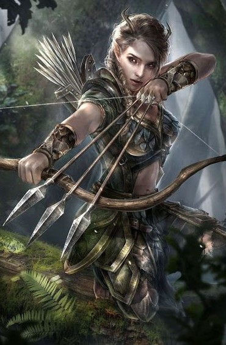
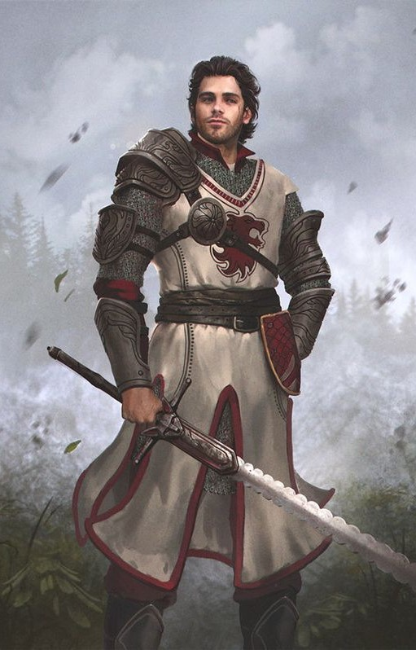
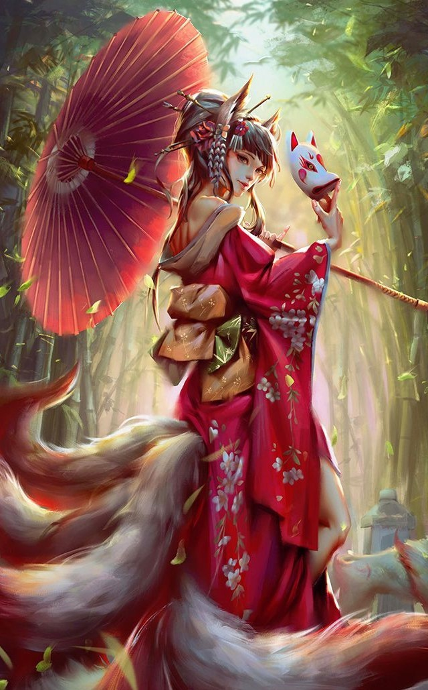
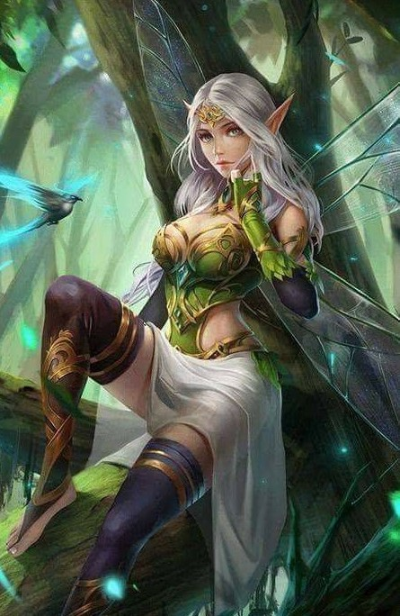
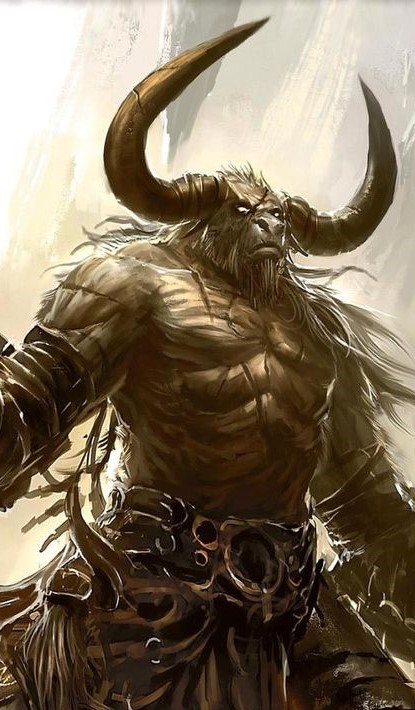
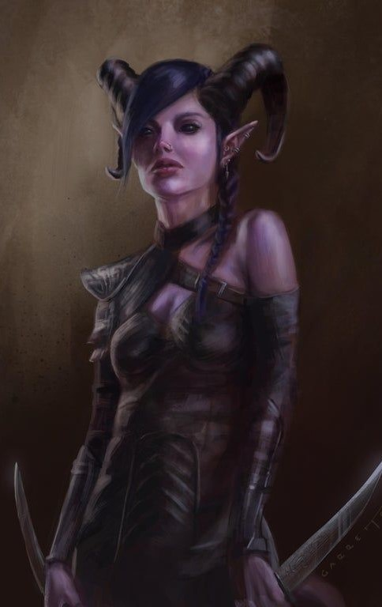
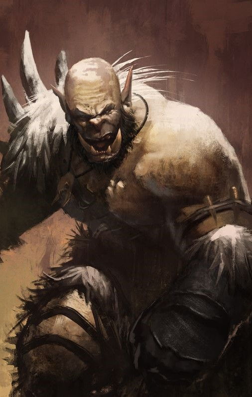
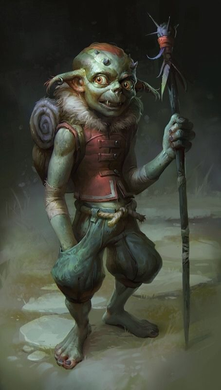

Elven
São conhecidos por serem criaturas extremamente habilidosas seja com arcos ou magia, e são capazes de enxergar a quilômetros de distância. Seus espíritos imortais os permitem viver por milênios, logo estão em uma constante busca por conhecimento e por melhorarem seu corpo físico. São seres calmos, sábios e que dificilmente iniciam ou participam de uma guerra que não tenha um motivo nobre ou que os afete diretamente, são conhecidos por serem criaturas que prezam pela paz
ALTURA - 1,00 até 1,10

Human
São corajosos e conseguem ser facilmente corrompidos, são ambiciosos e isso o levará a grandeza ou ao fundo do poço. São naturalmente curiosos, inteligentes e se adaptam facilmente, são sociáveis mas com humores inconstante, não dá pra prever um humano, o que será que eles escondem?
ALTURA - 1,00

Dwarf
Possuem reconhecimento pelos seus trabalhos impecáveis como mineradores e ferreiros, suas mãos apesar de pequenas, são extremamente habilidosas e conseguem carregar bastante peso, são grandes trabalhadores, alguns um pouco mais ranzinzas, normalmente possuem um bom humor mas deixar um Dwarf bravo é quase como comprar uma briga. Eles obtêm a benção de Statera
ALTURA - 0,85

Kitsune
Adoram atenção e possuem um charme natural, quase impossível de resistir, são seres de uma persuasão muito poderosa, mas é preciso tomar cuidado uma vez que cair à tentação de uma Kitsune, nunca se sabe o que ela fará. Gostam de se esconder entre as raças e ama exibir sua cauda.
ALTURA - 0,80 até 0,95

Faery
São pequenos seres abençoados por Statera com muita carisma e extremamente curiosos, adoram fazer perguntas, mesmo que constrangedoras e adoram, acima de tudo, pregar peças. Usam seu tamanho como vantagem para ouvir segredos de toda Tarkan e se esconder de grandes inimigos. É melhor sempre manter uma Faery como aliada, por serem travessas nunca se sabe o que podem aprontar.
ALTURA - 0,80

Bull
Apesar da sua aparência um pouco hostil, Bulls são seres de Statera, sua forma grande e forte tem o objetivo de proteger os menores, eles são calmos e pacíficos, sempre procuram manter a paz entre raças, suas patas o fazem veloz e seus chifres ajudam tanto na proteção quanto na defesa. Bulls não suportam Orcs, dizem as lendas que foram criados por Statera pra confrontar Orcs caso haja uma guerra, pois são os únicos que possuem força para tal.
ALTURA - 1,20 até 1,35

Chaotic
São lacaios criados por Durkan, possuem uma personalidade um tanto quanto sádica, não possuem um humor muito agradável e dificilmente sorriem, adoram o caos, sempre procuram causar ódio e briga entre as outras espécies, conseguem facilmente conquistar a confiança de alguém para obter informações e favores.
ALTURA - 1,05 até 1,15

Orc
Tem um temperamento um tanto quanto explosivo, gostam de lutas e não possuem muita inteligência ou beleza mas o que eles não possuem disso, possuem de força. Sua altura causa medo e o chão treme por onde eles passam. Orcs são criaturas de Durkan, consequentemente causam caos e brigas por todos os cantos. Eles nunca perdem a chance de uma boa briga mas ficam facilmente entediados se seu oponente não for à altura.
ALTURA - 1,20 até 1,35

Goblin
Possuem um humor ácido, são grosseiros, medrosos e fujões, mas sua coragem é mostrada quando atacam em bando, usam seu tamanho como vantagem, conseguindo golpear joelhos e os pés dos inimigos, os deixando no chão, assim os finalizam, sem pena. Foram corrompidos por Durkan, consequentemente adoram guerriar e causar o caos.
ALTURA - 0,80